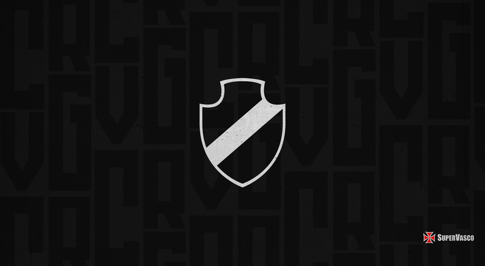
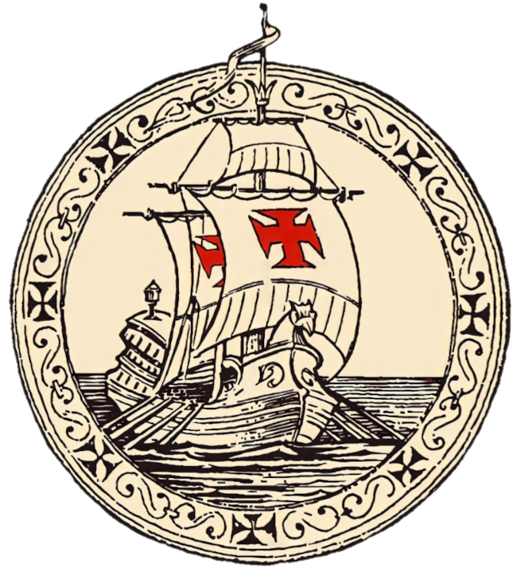
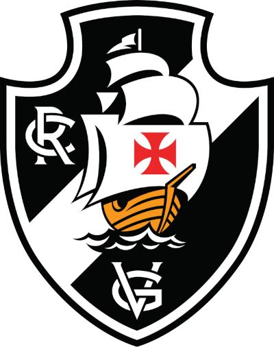
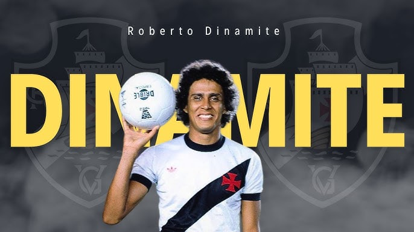
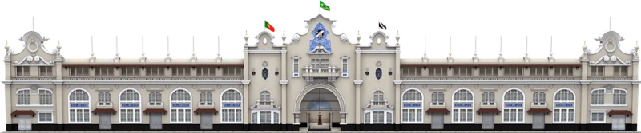
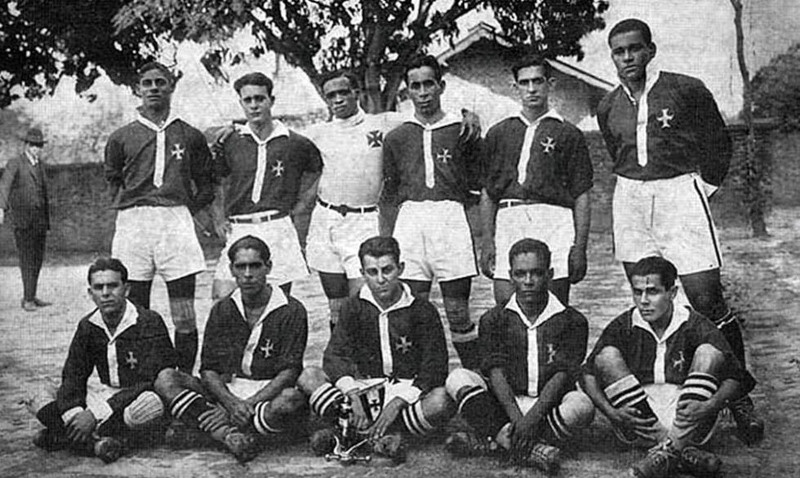
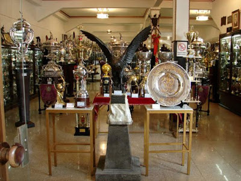

O Club de Regatas Vasco da Gama tem uma das histórias mais ricas do futebol brasileiro. Além dos títulos e dos grandes ídolos, o clube também ficou famoso pelos seus símbolos, principalmente o escudo e a chamada “Cruz de Malta”
Quando o Vasco foi fundado, em 1898, o primeiro escudo era bem diferente do atual. Ele era redondo e trazia uma caravela, representando as grandes navegações portuguesas.

ESCUDOS E MUDANÇA
Em 1903, o clube mudou o símbolo: colocou fundo preto, as letras CRVG e cruzes ligadas à Ordem de Cristo, muito usadas nas embarcações portuguesas da época de Vasco da Gama.

Já na década de 1920 veio a maior transformação. O Vasco adotou o escudo no formato que ficou famoso:
- faixa branca diagonal;
- caravela navegando;
- fundo preto;
- e a cruz vermelha.

A faixa branca simboliza o caminho marítimo descoberto por Vasco da Gama até as Índias, enquanto o preto representa os mares desconhecidos enfrentados pelos navegadores.
Mas existe uma curiosidade histórica muito famosa: a cruz do Vasco tecnicamente não é a verdadeira Cruz de Malta.
O povo passou décadas chamando o símbolo de “Cruz de Malta”, até porque isso aparece no hino:
> “A Cruz de Malta é o meu pendão”
Só que especialistas explicam que o símbolo usado pelo clube é, na verdade, uma Cruz Pátea — muito parecida, mas diferente da cruz original da Ordem de Malta.
Essa confusão virou parte da identidade vascaína. Hoje, mesmo sabendo da diferença histórica, a torcida continua chamando o clube de “Gigante da Colina” e “Cruzmaltino”.
Ao longo do tempo, o escudo recebeu pequenas modernizações:
- Anos 1980: ajustes visuais e linhas mais modernas;
- 2021: novo refinamento da caravela, letras e contornos, mantendo a tradição.
JOGADORES HISTÓRICOS
E quando se fala no maior jogador da história do Vasco, o nome mais lembrado é Roberto Dinamite.
Ele marcou mais de 700 gols pelo clube e virou símbolo eterno da torcida vascaína. Sua história começou ainda garoto, quando fez um golaço tão forte que ganhou o apelido “Dinamite”. Desde então virou o maior artilheiro da história do Vasco.

- Romário
- Edmundo
- Juninho Pernambucano
- Ademir de Menezes
Outros craques gigantes também fizeram história:
ESTÁDIO E TÍTULOS
O estádio do Club de Regatas Vasco da Gama é o famoso Estádio São Januário, oficialmente chamado de Estádio Vasco da Gama.
Inaugurado em 21 de abril de 1927, São Januário foi construído com dinheiro arrecadado pelos próprios torcedores vascaínos. Na época, era o maior estádio da América do Sul e virou símbolo da força popular do clube.
A construção do estádio também teve um significado histórico muito forte. O Vasco sofria preconceito por escalar jogadores negros e operários, então decidiu criar sua própria casa para enfrentar os clubes elitistas da época.
Uma curiosidade famosa é que o nome “São Januário” surgiu porque o estádio fica próximo à Rua São Januário. Mesmo assim, oficialmente ele se chama Estádio Vasco da Gama.
Hoje, São Januário é considerado um dos estádios mais tradicionais e históricos do futebol brasileiro, sendo um símbolo da identidade vascaína e da luta contra o preconceito no esporte.

O Club de Regatas Vasco da Gama construiu uma das histórias mais vitoriosas do futebol brasileiro. Desde o início do século XX, o clube acumulou títulos estaduais, nacionais e internacionais, tornando-se conhecido como o “Gigante da Colina”.
O primeiro grande momento aconteceu em 1923, quando o Vasco conquistou o Campeonato Carioca com o famoso time dos “Camisas Negras”. Aquela conquista marcou o futebol brasileiro porque o clube escalava jogadores negros, pobres e operários, enfrentando o preconceito da época.

Nas décadas seguintes, o Vasco virou potência nacional. Nos anos 1940 surgiu o lendário “Expresso da Vitória”, considerado um dos maiores times da história do Brasil. Esse elenco conquistou o Campeonato Sul-Americano de Campeões de 1948, torneio que muitos consideram precursor da Libertadores. Foi a primeira grande conquista internacional de um clube brasileiro.

RESPOSTA HISTÓRICA
O Vasco também ficou marcado pela “Resposta Histórica” de 1924, quando enfrentou o preconceito no futebol brasileiro e defendeu jogadores negros e pobres, algo revolucionário para a época. Isso ajudou o clube a construir a imagem de time do povo e da inclusão.